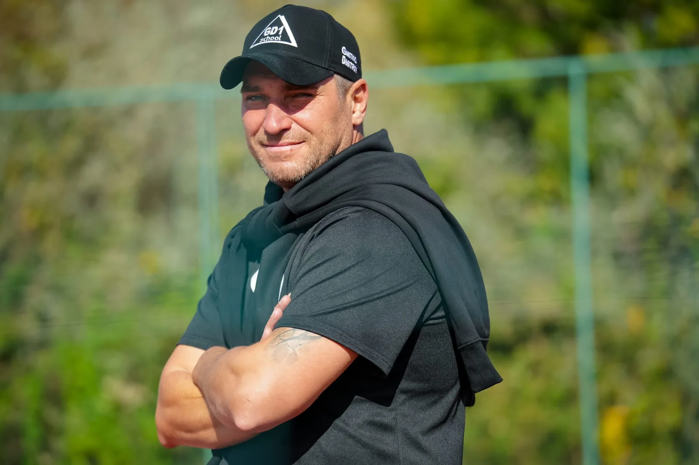

GD1 · ПРО ТРЕНЕРА
Дмитро
Гнітко.
Засновник і головний тренер · Розвиток гравців
Колишній професійний хокеїст із Харкова з понад 20-річним досвідом розвитку гравців. Дмитро поєднує в GD1 фундамент школи «Дружба-78» та міжнародний тренерський досвід.
Переглянути кемпи GD1ДОСВІД, ЩО СТОЇТЬ ЗА МЕТОДИКОЮ
Шлях, пройдений
на льоду.
Від професійного хокею й роботи зі збірними до тренувальних кемпів по всій Європі - досвід Дмитра формує підхід GD1 до техніки катання та індивідуального розвитку гравців.
-
Хокейний фундамент
«Дружба-78», Харків
Хокейний шлях Дмитра розпочався у харківській школі «Дружба-78», де він опанував основи катання, що визначили його професійну кар’єру. Завдяки системним тренуванням і повторенням він розвинув баланс, контроль ребер і ефективність рухів, які допомагали адаптуватися до різних команд та стилів гри.
Ці принципи залишаються основою його роботи в GD1: дати гравцям міцний технічний фундамент, пояснити мету кожного руху й сформувати навички, на які можна покластися у грі.
-
Ігровий досвід
Професійний хокей і капітанство
Нападник із досвідом виступів у кількох європейських лігах, Дмитро був капітаном львівського ХК «Леви». Досвід клубної кар’єри допомагає йому передавати гравцям GD1 практичне розуміння змагальної гри та командного лідерства.
Україна: «Донбас» Донецьк (2001–02), ХК «Харків» (2009–11) та ХК «Леви» Львів (2011–13). У складі «Левів» він закинув 32 шайби й віддав 53 результативні передачі у 71 матчі регулярного сезону.
Білорусь: Виступав за ХК «Вітебськ», «Хімік-СКА» Новополоцьк та ХК «Брест-2».
Сербія: ХК «Партизан» Белград (2007–08) і «Беостар» (2014–15).
Туреччина: Polis Akademisi SK (2009–10).
Іспанія: Escor-Bakh Vitoria/Gasteiz (2013–14), у складі якого став чемпіоном Іспанії.
Литва: «Юодупе» (2015–16) та «Рокішкіс» (2016–18).
-
Міжнародний тренерський досвід
Досвід роботи в Європі
Дмитро працював тренером в Україні, Сербії та Литві й багато років бере участь у міжнародних кемпах, зокрема програмах розвитку гравців високого рівня, по всій Європі. Основні напрями його роботи - техніка катання, механіка рухів, контроль шайби та індивідуальний розвиток хокеїстів.
-
Національні збірні
Україна U16 та Сербія U18
Дмитро працював у тренерському штабі збірної України U16, а також асистентом тренера збірної Сербії U18 на чемпіонаті світу.
-
GD1 сьогодні
Засновник і головний тренер GD1
Дмитро очолює GD1 - програму розвитку гравців, що спеціалізується на техніці катання та індивідуальних хокейних навичках. На цілеспрямованих кемпах він застосовує методику роботи з юними спортсменами, юніорами високого рівня та професіоналами.
ПРИНЦИП GD1
«Потрібно лише дотримуватися методики та наших рекомендацій».
Тренерська філософія Дмитра поєднує міцну базу катання, хокейний інтелект та ефективні рухи, які безпосередньо працюють в ігрових ситуаціях. Кемпи GD1 дають гравцям час і структуру для розвитку цих навичок через послідовну, цілеспрямовану роботу.